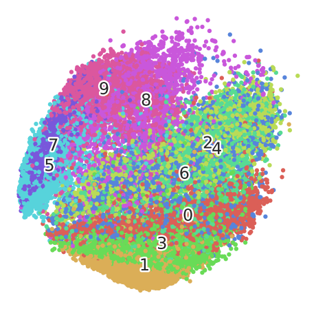
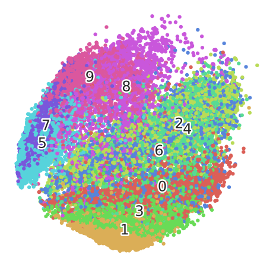

# Copy and paste from
# https://towardsdatascience.com/visualising-high-dimensional-datasets-using-pca-and-t-sne-in-python-8ef87e7915b
# with trivial modifications
#
# Author: Nobody in Computer Vision
# Date: 2022-03-05
#
# Contacts:
# Company: Longer Vision Technology
# Email: jiapei@longervision.com
# Website: https://www.longervision.com
# Fashion MNIST reader
def load_mnist(path, kind='train'):
import os
import gzip
import numpy as np
"""Load MNIST data from `path`"""
labels_path = os.path.join(path,
'%s-labels-idx1-ubyte.gz'
% kind)
images_path = os.path.join(path,
'%s-images-idx3-ubyte.gz'
% kind)
with gzip.open(labels_path, 'rb') as lbpath:
labels = np.frombuffer(lbpath.read(), dtype=np.uint8,
offset=8)
with gzip.open(images_path, 'rb') as imgpath:
images = np.frombuffer(imgpath.read(), dtype=np.uint8,
offset=16).reshape(len(labels), 784)
return images, labels
X_train, y_train = load_mnist('/media/lvision/Sabrent/datasets/fashion_mnist', kind='train')
print(X_train.shape)
print(y_train)
print(y_train.shape)
(60000, 784)
[9 0 0 ... 3 0 5]
(60000,)
import time
import pandas as pd
import numpy as np
import matplotlib.pyplot as plt
import matplotlib.patheffects as PathEffects
%matplotlib inline
import seaborn as sns
sns.set_style('darkgrid')
sns.set_palette('muted')
sns.set_context("notebook", font_scale=1.5,
rc={"lines.linewidth": 2.5})
RS = 123
# Utility function to visualize the outputs of PCA and t-SNE
def fashion_scatter(x, colors):
# choose a color palette with seaborn.
num_classes = len(np.unique(colors))
palette = np.array(sns.color_palette("hls", num_classes))
# create a scatter plot.
f = plt.figure(figsize=(8, 8))
ax = plt.subplot(aspect='equal')
sc = ax.scatter(x[:,0], x[:,1], lw=0, s=40, c=palette[colors.astype(np.int)])
plt.xlim(-25, 25)
plt.ylim(-25, 25)
ax.axis('off')
ax.axis('tight')
# add the labels for each digit corresponding to the label
txts = []
for i in range(num_classes):
# Position of each label at median of data points.
xtext, ytext = np.median(x[colors == i, :], axis=0)
txt = ax.text(xtext, ytext, str(i), fontsize=24)
txt.set_path_effects([
PathEffects.Stroke(linewidth=5, foreground="w"),
PathEffects.Normal()])
txts.append(txt)
return f, ax, sc, txts
# Subset first 20k data points to visualize
x_subset = X_train[0:20000]
y_subset = y_train[0:20000]
print (np.unique(y_subset))
[0 1 2 3 4 5 6 7 8 9]
from sklearn.decomposition import PCA
time_start = time.time()
pca = PCA(n_components=4)
pca_result = pca.fit_transform(x_subset)
print ('PCA done! Time elapsed: {} seconds'.format(time.time()-time_start))
PCA done! Time elapsed: 0.7926383018493652 seconds
pca_df = pd.DataFrame(columns = ['pca1','pca2','pca3','pca4'])
pca_df['pca1'] = pca_result[:,0]
pca_df['pca2'] = pca_result[:,1]
pca_df['pca3'] = pca_result[:,2]
pca_df['pca4'] = pca_result[:,3]
print ('Variance explained per principal component: {}'.format(pca.explained_variance_ratio_))
Variance explained per principal component: [0.29021329 0.1778743 0.06015076 0.04975864]
top_two_comp = pca_df[['pca1','pca2']] # taking first and second principal component
fashion_scatter(top_two_comp.values,y_subset) # Visualizing the PCA output
/tmp/ipykernel_3852428/2307473512.py:11: DeprecationWarning: `np.int` is a deprecated alias for the builtin `int`. To silence this warning, use `int` by itself. Doing this will not modify any behavior and is safe. When replacing `np.int`, you may wish to use e.g. `np.int64` or `np.int32` to specify the precision. If you wish to review your current use, check the release note link for additional information.
Deprecated in NumPy 1.20; for more details and guidance: https://numpy.org/devdocs/release/1.20.0-notes.html#deprecations
sc = ax.scatter(x[:,0], x[:,1], lw=0, s=40, c=palette[colors.astype(np.int)])
(<Figure size 576x576 with 1 Axes>,
<AxesSubplot:>,
<matplotlib.collections.PathCollection at 0x7fc7190a8220>,
[Text(774.4497664226483, -689.6949155550468, '0'),
Text(42.86381926014401, -1429.364390836378, '1'),
Text(1098.2843326495163, 376.9753232934469, '2'),
Text(329.2719860683994, -1111.489809090023, '3'),
Text(1266.9709868256105, 295.4662008396093, '4'),
Text(-1589.557323392114, 61.86773393697598, '5'),
Text(713.4727983678105, -65.68701122739054, '6'),
Text(-1521.4109429504147, 335.665625321843, '7'),
Text(63.81768171682446, 1003.3250404493501, '8'),
Text(-645.6906091267293, 1168.2384039046956, '9')])
from sklearn.manifold import TSNE
import time
time_start = time.time()
fashion_tsne = TSNE(learning_rate='auto', init='pca', random_state=RS).fit_transform(x_subset)
print ('t-SNE done! Time elapsed: {} seconds'.format(time.time()-time_start))
/home/lvision/.local/lib/python3.8/site-packages/sklearn/manifold/_t_sne.py:982: FutureWarning: The PCA initialization in TSNE will change to have the standard deviation of PC1 equal to 1e-4 in 1.2. This will ensure better convergence.
warnings.warn(
t-SNE done! Time elapsed: 43.96088123321533 seconds
fashion_scatter(fashion_tsne, y_subset)
/tmp/ipykernel_3852428/2307473512.py:11: DeprecationWarning: `np.int` is a deprecated alias for the builtin `int`. To silence this warning, use `int` by itself. Doing this will not modify any behavior and is safe. When replacing `np.int`, you may wish to use e.g. `np.int64` or `np.int32` to specify the precision. If you wish to review your current use, check the release note link for additional information.
Deprecated in NumPy 1.20; for more details and guidance: https://numpy.org/devdocs/release/1.20.0-notes.html#deprecations
sc = ax.scatter(x[:,0], x[:,1], lw=0, s=40, c=palette[colors.astype(np.int)])
(<Figure size 576x576 with 1 Axes>,
<AxesSubplot:>,
<matplotlib.collections.PathCollection at 0x7fc718ff0700>,
[Text(778.7831, -690.5499, '0'),
Text(41.839653, -1422.7478, '1'),
Text(1117.2075, 377.60907, '2'),
Text(336.99088, -1105.6271, '3'),
Text(1268.7771, 291.67786, '4'),
Text(-1574.2866, 44.31055, '5'),
Text(716.95105, -71.590546, '6'),
Text(-1506.3627, 342.83994, '7'),
Text(67.689384, 1006.9206, '8'),
Text(-646.5144, 1174.269, '9')])

time_start = time.time()
pca_50 = PCA(n_components=50)
pca_result_50 = pca_50.fit_transform(x_subset)
print ('PCA with 50 components done! Time elapsed: {} seconds'.format(time.time()-time_start))
print ('Cumulative variance explained by 50 principal components: {}'.format(np.sum(pca_50.explained_variance_ratio_)))
PCA with 50 components done! Time elapsed: 2.172032594680786 seconds
Cumulative variance explained by 50 principal components: 0.8625161212057489
import time
time_start = time.time()
fashion_pca_tsne = TSNE(learning_rate='auto', init='pca', random_state=RS).fit_transform(pca_result_50)
print ('t-SNE done! Time elapsed: {} seconds'.format(time.time()-time_start))
/home/lvision/.local/lib/python3.8/site-packages/sklearn/manifold/_t_sne.py:982: FutureWarning: The PCA initialization in TSNE will change to have the standard deviation of PC1 equal to 1e-4 in 1.2. This will ensure better convergence.
warnings.warn(
t-SNE done! Time elapsed: 40.08835172653198 seconds
fashion_scatter(fashion_pca_tsne, y_subset)
/tmp/ipykernel_3852428/2307473512.py:11: DeprecationWarning: `np.int` is a deprecated alias for the builtin `int`. To silence this warning, use `int` by itself. Doing this will not modify any behavior and is safe. When replacing `np.int`, you may wish to use e.g. `np.int64` or `np.int32` to specify the precision. If you wish to review your current use, check the release note link for additional information.
Deprecated in NumPy 1.20; for more details and guidance: https://numpy.org/devdocs/release/1.20.0-notes.html#deprecations
sc = ax.scatter(x[:,0], x[:,1], lw=0, s=40, c=palette[colors.astype(np.int)])
(<Figure size 576x576 with 1 Axes>,
<AxesSubplot:>,
<matplotlib.collections.PathCollection at 0x7fc71745d790>,
[Text(782.2962, -689.9176, '0'),
Text(41.347614, -1423.7305, '1'),
Text(1113.7422, 381.17953, '2'),
Text(331.26837, -1107.6791, '3'),
Text(1275.3954, 286.95758, '4'),
Text(-1581.365, 46.893547, '5'),
Text(717.2779, -79.60612, '6'),
Text(-1509.5262, 348.0835, '7'),
Text(73.7935, 1008.3449, '8'),
Text(-645.55835, 1172.3257, '9')])
